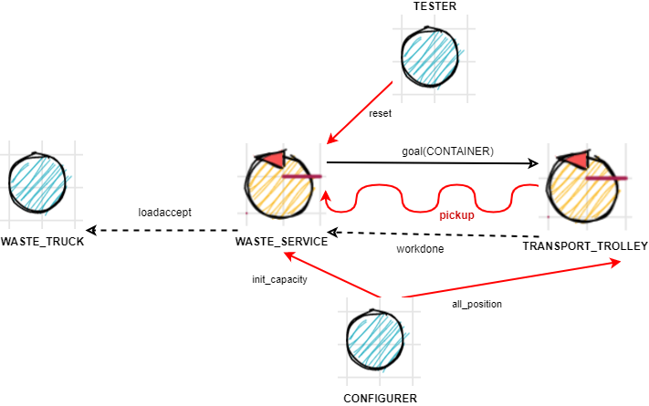
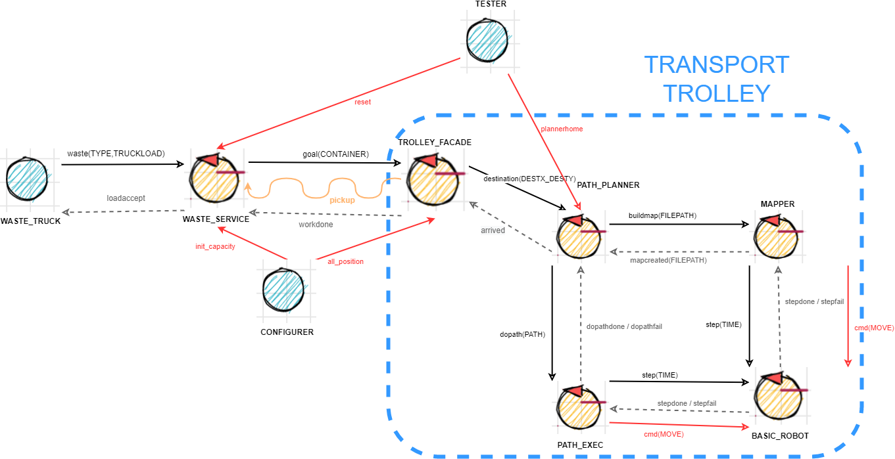

Introduction
Tema finale corso di studio Ingegneria dei sistemi software, Laurea Magistrale Università di Bologna
PRECEDENTI
CHECKPOINT : REQUISITI
Modello dei requisiti
- modello_requisiti
- path : CoreWasteService/src/modello_requisiti.qakt
-

Per eseguire il modello, rinominare il file in modello_requisiti.qak, eliminare le sorgenti generate e rigenerare il sistema
core-functionality - Punti aperti
When the load is accepted , the transport trolley reaches the INDOOR, picks up the material , goes to the proper container and settles the material.
During this activity, the WasteService blinks the Led- Problema: innesco procedura proattiva di Transport_trolley
(denominato in seguito issue_trolley) - Problema: comunicazione da parte del Transport_trolley della fine del prelievo dei materiali, il truck solo dopo il prelievo libera INDOOR ( Q2 )
(denominato in seguito pickup) When the deposit action is terminated , the transport trolley excutes another deposit command (if any) or returns to its HOME.
- Problema: comunicazione da parte del Transport_trolley della terminazione del lavoro assegnato
(denominato in seguito work_complete) - Problema: al Transport_trolley devono arrivare informazioni riguardanti l'incarico successivo
(denominato in seguito next_work)
alarm : non considerato
statusGUI : non considerato
CHECKPOINT : PROBLEMA
Modello del problema
- modello_problema_conoscenza
- path : CoreWasteService/src/modello_problema_conoscenza.qakt
- 
| PROBLEMA | soluzione adottata |
|---|---|
| issue_trolley | request-response |
| informazione posizione containers | il payload é il nome del container |
| pickup : Trolley to Waste_Service | evento |
| pickup : Waste_Service to Waste_Truck | request-response, sfruttando R2 loadaccept |
| work_complete | request-response, sfruttando proposta response di issue_trolley |
| next_work : Waste_Service to Trolley | stesso di issue_trolley |
| next_work: produttore-consumatore | nuove richieste sono messe in coda al Transport_trolley |
Esecuzione automatica dei test
In caso si rigenerassero i sorgenti con l'interprete qak, aggiungere alla Classe : CoreWasteService/src/it/unibo/transporttrolley/Transporttrolley.kt il seguente import :
import java.util.*
Comandi
Build: gradle build -x test
Testing: gradle test
Risultati test
ls build/reports/tests/test/
ls build/test-results/test/
Problem analysis
LEGGERE DOPO LA PROGETTAZIONE
percorso
La parte proattiva di un robot consiste spesso nell'esecuzione di una sequenza di movimenti che lo portano in una posizione desiderato dello spazio di lavoro (in questo caso lo spazio della stazione di Waste_Service).
Questa sequenza può essere:
- cablata nel codice
- generata dinamicamente
- prodotta da una macchina a stati finiti
- algoritmi denominati di classe Path-Finding
Se lo spazio di lavoro è immutabile per tutte e le istanze su cui verrà eseguito l'applicazione (ed uguali tra loro), si potrebbe considerare di avere queste sequenze cablate, perchè deducibili a priori del tempo di esecuzione
Se la logica dei percorsi è chiara e semplice (rispetto alle competenze algoritmiche logiche del programmatore), basta una macchina a stati finiti.
In casi più complessi, si passano ad algoritmi di Path Finding.
mappa iniziale
Per poter costruire un percorso, la "mente" ha bisogno di informazioni riguardanti lo spazio di lavoro; NON è necessario avere conoscenza totale dello spazio disponibile, se il "corpo" informa la "mente" quando e quale parte del piano che esso ha creato non è andato a buon fine, e la mente aggiorna la sua base di conoscenza riguardante lo spazio circostante; tuttavia non conviene neache partire da zero base di conoscenza dello spazio perchè c'è un tempo iniziale a partire dal momento di esecuzione nella quale la mente deve sbagliare molte volte, è necessaria quindi una fase di "esplorazione parziale" dello spazio circostante.
- zero conoscenza
- qualche base di conoscenza
- Solo i bordi
È semplice da pensare al percorso (descrivibile tramite macchina a stati finiti con pochi stati) ed permette all'algoritmo poi più complesso di Path-Finding di notificare se la destinazione è fuori dall'area di lavoro con un rapido controllo, non fare tentativi aggiramenti di un muro continuo
- conoscenza totale iniziale
passaggio mappa
Si possono pensare a 3 modi di scambiare la mappa (un file testuale), con livello incrementale di disaccoppiamento e latenza
- pathname relativo : planner e mapper sono nello stesso progetto
- pathname assoluto : planner e mapper sono nello stesso nodo fisico
- trasferimento file : planner e mapper possono stare anche su macchine diverse; se sono sulla stessa macchina servono piccoli accorgimenti per non trasferire (input e output) lo stesso file
coerenza mapper planner
Il mapper per funzionare deve pilotare un robot che esegue i comandi aril, Il planner per funzionare pilota un pathexecutor che a sua volta pilota un robot. Pathexecutor e robot sono nello stesso contesto perchè sono fortemente accoppiati
Se mapper e planner sono distribuiti in contesti distinti, per integrità devo verificare che rispettivamente robot e pathexecutor sono la coppia corretta.
Project
Transport_trolley
Identifico diverse responsabilità assegnate all'unità astratta Trolley
- Trovare i percorsi che nel loro insieme compongono un lavoro di load
Possiamo dividire la mente dal corpo, quindi
- entità A : (nome_temp PATH_PLANNER) il quale decide il percorso conoscendo la posizione attuale e la posizione finale
- entità B : (PATH_EXECUTOR) il quale prende il percorso elaborato dal "cervello" PATH_PLANNER, ed esegue i movimenti in ordine
- Effettivamente muovere il robot fisico/virtuale che si avrà a disposizione
- entità C : (ROBOT_MOVER)
- ci sarà un'entità di ROBOT_MOVER per ogni robot supportato, queste entità mascherano le differenze di interazione tra una e l'altra, condividendo la stessa interfaccia/ insime di messaggi a cui possono reagire
- Mantenendo l'interfaccia (insieme di messaggi reagenti) attribuita in fase di analisi
All'interno della nostra software house sono già presenti componenti sviluppati che si occupano delle rispettive responsabilità
- entità A (PATH_PLANNER): unibo.robotappl1
- entità B (PATH_EXECUTOR): unibo.basicrobot22 (QActor: pathexec)
- entità C (ROBOT_MOVER): unibo.basicrobot22 (QActor: basicrobot)
- entità D (TROLLEY_FACADE): CoreWasteService.transporttrolley
GUARDARE ANALISI: PERCORSO E MAPPA INIZIALE
identifichiamo un una ulteriore entità in supporto all'entità A
- entità D (MAPPER): unibo.mapper
TROLLEY_FACADE
Dipende dalla business logic, mantiene la logica della successione di luoghi da visitare per un dato compito, e pilota il pathplanner.
PATH_PLANNER
È un attuatore nei confronti di una qualsiasi richiesta di calcolo di percorso , mantine ed aggiorna una mappa interna. Nel caso in cui la mappa non è aggiornata (il path calcolato non porta a destinazione), aggiorna le informazioni sulla mappa e calcola un percorso alternativo.
PATH_EXECUTOR
È un attuatore nei confronti di una qualsiasi richiesta di esecuzione di percorso, notificando il percorso rimanente impossibile da eseguire in caso di ostacoli
ROBOT_MOVER
È un attuatore nei confronti di messaggi definiti dall'interfaccia aril (Abstract Robot Interaction Lanaguage).
MAPPER(boundary)
È un attuatore che trova il perimetro dello spazio circostante e restituisce la mappa creata.
GUARDARE ANALISI : PASSAGGIO MAPPA E COERENZA PLANNER-MAPPER
COMMENTI
Si è ragionato su alcuni possibili estensioni del progetto
I componenti che sono dipendenti dalla business logic sono WASTE_SERVICE e TROLLEY_FACADE
Modifiche possibili continuando ad usare modello qak
- WASTE_SERVICE: Criterio di accettazione degli incarichi
- TROLLEY_FACADE: Successione di luoghi intermedi che deve passare il robot per un singolo compito
- WASTE_SERVICE e TROLLEY_FACADE: Politica di interazione a fronte di nuove richieste mentre il trolley è impegnato
Modifiche possibili solo al di fuori di qak
Non solo un container per GLASS e PLASTIC, ma dinamicamente aggiungere altri tipi di containers
I messaggi di configurazione dovrebbero accettare payload a lunghezza variabile, fuori dalle possibilità di qak
Il configuratore ottine per ogni container la posizione, il nome e la capienza, ha anche il compito di controllare l'integrità dei dati, in casi avanzati anche chiedere al mapper se le posizioni configurate sono esistenti nello spazio percorso.
WORKAROUND qak
durante la progettazione alcuni componenti avevano bisogno di importare librerie non comprese nell'autogenerazione, quindi è stato pensato di aggiungere nelle rispettive cartelle resources dei compilati kotlin che racchiudono queste chiamate
Modello del progetto
- modello_progetto : CoreWasteService
- path : CoreWasteService/src/modello_progetto.qak
- modello_progetto : PathPlanner
- path : PathPlanner/src/pathplanner.qak
- modello_progetto : BasicRobot
- path : BasicRobot/src/basicrobot.qak
- 
{kind=link}
Testing
Dopo aver generato con il modello del progetto
Il testing può essere fatto nello stesso modo del test plan attivando tutti i componenti.
Linux
Creato uno script per aprire 4 terminali con tutti i componenti necessari per il testing
Workflow Testing
## In WasteService
cd BasicRobot ; ./gradlew build
cd PathPlanner ; ./gradlew build
cd CoreWasteService ; ./gradlew build -x test
./launchall.sh
firefox http://localhost:8090/
cd CoreWasteService ; ./gradlew test
Deployment
Creato una programma console per simulare le richieste di un Waste_Truck.
Workflow utilizzo
## In WasteService
./launchall.sh
firefox http://localhost:8090/
cd TruckSimulator ; ./gradlew -q tui
CHECKPOINT: PROGETTAZIONE
Modello del progetto
- modello_progetto : CoreWasteService
- path : CoreWasteService/src/modello_progetto.qak
- modello_progetto : PathPlanner
- path : PathPlanner/src/pathplanner.qak
- modello_progetto : BasicRobot
- path : BasicRobot/src/basicrobot.qak
Workflow Testing
## In WasteService
cd BasicRobot ; ./gradlew build
cd PathPlanner ; ./gradlew build
cd CoreWasteService ; ./gradlew build -x test
./launchall.sh
firefox http://localhost:8090/
cd CoreWasteService ; ./gradlew test
Workflow utilizzo
## In WasteService ./launchall.sh firefox http://localhost:8090/ cd TruckSimulator ; ./gradlew -q tui
github: